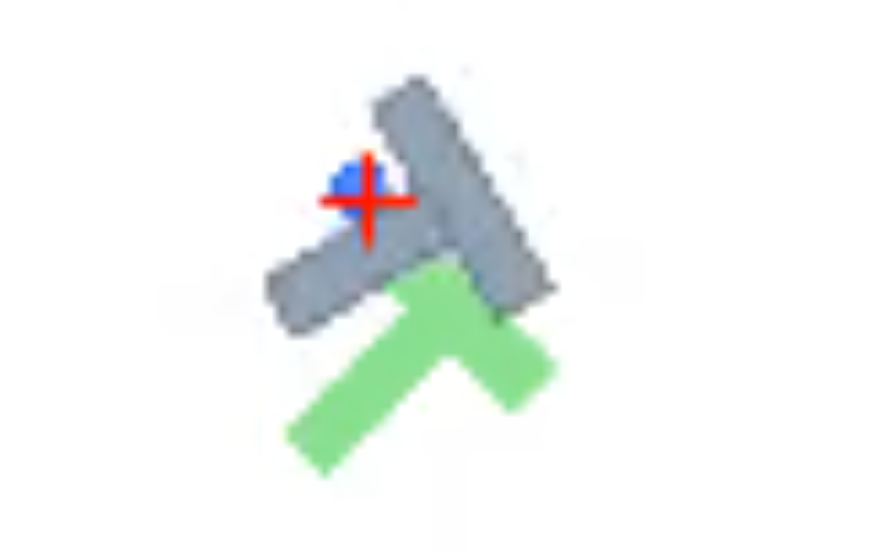

Featured Projects
Selected projects in robot learning, autonomous navigation, and hardware design. Each connects an implemented system with experiments, demonstrations, or field use.

Graduate-level Deep Learning | Brigham Young University
- Implemented DDPM and DDIM from scratch, then extended diffusion models to robotic actions and trajectories.
- Reimplemented Diffusion Policy and Diffuser for action generation and trajectory planning.
- Conditioned trajectories on goals and obstacles at inference time without retraining.

Graduate-level Autonomous Mobile Robots | Brigham Young University
- Built a 2D SLAM pipeline with C++ scan matching and pose-graph optimization in ROS 2.
- Added keyframes and loop closures to correct accumulated odometry drift.
- Created a Python simulator and visualization tools to evaluate trajectories, maps, and uncertainty.

Graduate-level Deep Learning | Brigham Young University
- Trained ResNet models to approximate control barrier functions in environments with circular obstacles.
- Developed a PPO navigation policy for a 2D single-integrator system.
- Evaluated learned safety functions and navigation behavior in unseen environments.

BYU Mechatronics Competition | Brigham Young University
- Led a four-person team to build an autonomous robot in under 10 weeks.
- Integrated a custom PCB, sensors, and bare-metal C firmware for navigation, targeting, and ball sorting.
- Earned a perfect task score and placed 4th of 30 teams in BYU’s mechatronics competition.

Global Engineering Outreach | Brigham Young University
- Developed an Arduino-based pressure mat for a nonprofit wheelchair clinic in Ecuador.
- Led development from concept to on-site prototype delivery in eight months.
- Built a $50 prototype, compared with commercial systems costing $1,000–$10,000.

Graduate-level Dynamics | Brigham Young University
- Derived constrained Euler–Lagrange dynamics for a trebuchet using Lagrange multipliers.
- Built a hybrid simulator spanning ground sliding, pendulum swing, and ballistic flight.
- Visualized motion and constraint forces with numerical simulations and animations.
Additional Projects
Advanced coursework and hands-on projects in robotics, manufacturing, and mechanical design.

Robot Manipulation and Motion Planning | 2024
Manipulator Kinematics and Dynamics | Brigham Young University
- Built a manipulator visualizer using Denavit–Hartenberg kinematics.
- Integrated MoveIt2 and implemented a potential-field planner for collision-free arm motion.

Precision-Machined Air Engine | 2025
Precision Manual Machining | Brigham Young University
- Manufactured an air engine to sub-thousandth-inch precision using manual machining.
- Produced engineering drawings and process documentation; earned best motor in the lab section for operating at the lowest pressure.

Scissor Jack Design and FEA | 2024
FEA Optimization and Mechanical Design | Brigham Young University
- Led analytical and numerical optimization of a scissor jack.
- Used finite element analysis to verify safety factors and documented the design in a technical report.

DC Motor Design and System Identification | 2023
System Identification and Dynamic Modeling Project | Brigham Young University
- Built and refined a demonstration motor across three design iterations.
- Combined experimental measurements and MATLAB system identification to estimate model parameters.